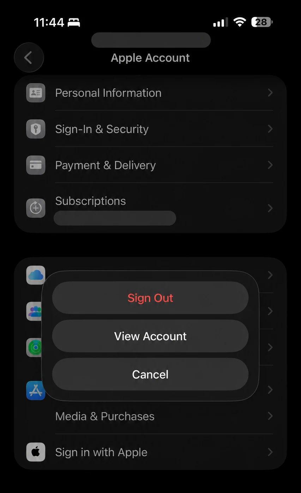
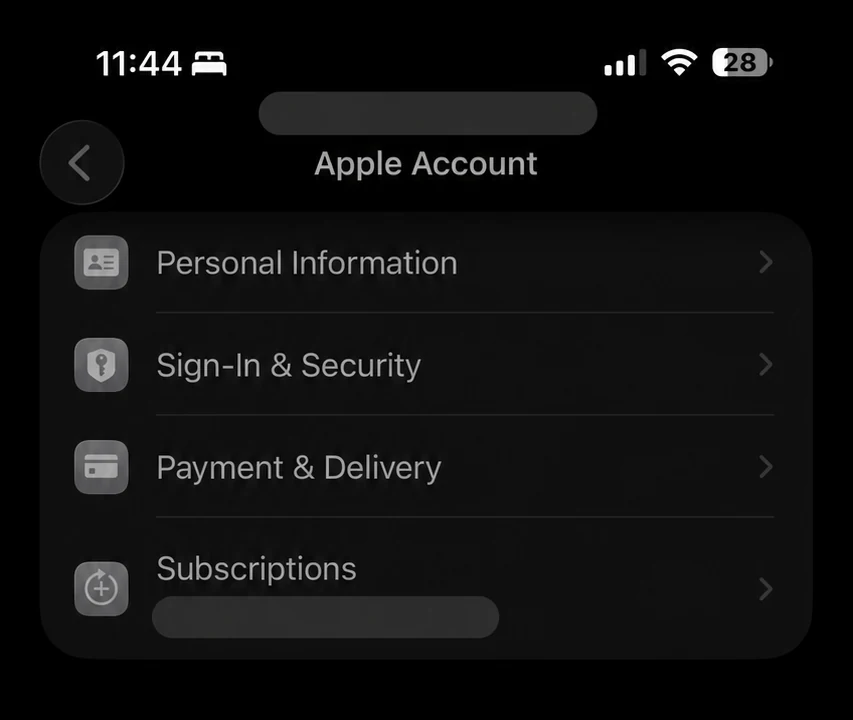
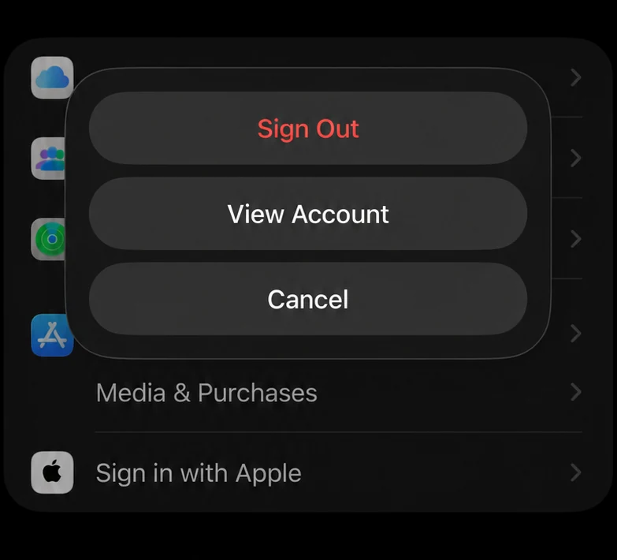

For years, many iPhone users signed out of the App Store by opening the App Store, tapping the profile picture in the top-right corner, scrolling to the bottom and tapping Sign Out. Older tutorials still show that route. On some recent iOS 26 versions, however, the button may no longer appear there.
Settings → [your name] → Media & Purchases → Sign Out

What changed in recent iOS 26 versions?
An older App Store troubleshooting guide shows the familiar profile-page method: open the App Store, tap the avatar, scroll to the bottom and choose Sign Out. That remains useful background, but it is no longer reliable on every recent iOS 26 build.
Apple's current support instructions direct iPhone and iPad users to Settings → [your name] → Media & Purchases. This is the route to use when Sign Out is missing inside the App Store.
Inside the App Store
- Open App Store
- Tap your profile picture
- Scroll to the bottom
- Tap Sign Out
May still appear on some versions, but not all recent iOS 26 builds.
Through Settings
- Open Settings
- Tap your name
- Tap Media & Purchases
- Tap Sign Out
This matches Apple's current support guidance.
How to sign out of the App Store on iOS 26
Open the Settings app
Look for the grey gear icon on your Home Screen or in App Library.
Tap your name or Apple Account banner
It appears at the top of Settings. This opens the Apple Account page.

Tap Media & Purchases
Scroll down the Apple Account page if needed. Do not tap the separate, full Apple Account sign-out control at the bottom of the page.
Tap Sign Out
A menu appears with Sign Out, View Account and Cancel. Choose Sign Out.
Confirm if prompted
Tap Sign Out again if iOS asks for confirmation. Your App Store and media-purchase session will end.

Use Media & Purchases—not the full Apple Account Sign Out
If you only want to change or refresh the account used by the App Store, sign out from the Media & Purchases menu. The separate Sign Out button at the bottom of the full Apple Account page affects iCloud and other Apple services and is not required for this task.
How to sign in again or use another Apple Account
Return to Settings → [your name] → Media & Purchases. To reconnect the same account, tap Continue. To use a different purchase account, choose the option labelled Not [your name]? when it appears and enter the other Apple Account details.
Only sign in to an account that belongs to you or that you are authorised to use. Apps, subscriptions and purchases remain associated with the Apple Account that originally acquired them.
What does signing out of Media & Purchases affect?
It changes your store session
The account used for the App Store and Apple media purchases is signed out.
It does not sign out of iCloud
Apple states that you do not need to sign out of iCloud or iMessage when changing Media & Purchases.
Downloaded media may be removed
Apple warns that signing in and out of Media & Purchases can remove downloaded content from Apple services.
Purchases stay linked to their account
An app or media purchase remains tied to the Apple Account that originally obtained it.
Can this help when the App Store keeps asking for a password?
Signing out and back in can refresh the Media & Purchases session, so it is a sensible troubleshooting step when the App Store repeatedly asks for a password. If the prompt returns for one particular app, that app may have been downloaded using a different Apple Account.
If the problem continues, restart the iPhone, install the latest iOS update available for your device, check your Apple Account payment information and contact Apple Support if the account cannot be verified.
Frequently asked questions
Where is the App Store Sign Out button on iOS 26?
Go to Settings → [your name] → Media & Purchases → Sign Out. Tap Sign Out again if confirmation appears.
Does this sign me out of iCloud, iMessage or Find My?
No. Signing out of Media & Purchases is different from signing out of the full Apple Account. Your iCloud, iMessage and Find My sessions remain separate.
Will it delete my installed apps?
It does not normally uninstall apps. However, downloaded content from Apple media services may be removed, and apps or purchases remain linked to the account that originally acquired them.
Why is the old App Store method missing?
The profile-page Sign Out control may not be available on some recent iOS 26 versions. Apple currently documents the Settings and Media & Purchases route, so that is the best method to follow.
Can I use a different Apple Account for App Store purchases?
Yes, where Apple's account rules permit it. After signing out of Media & Purchases, choose the option to use another account. Existing purchases do not transfer automatically between accounts.
Sources and verification
- Apple Support: Sign out of Media & Purchases
- Apple Support: Sign out and back in to Media & Purchases
- Apple: Apple Store App & Privacy
- Earlier App Store profile-page method documented by Wondershare
Last checked: 1 August 2026. Apple can change menu names and locations between iOS releases, regions and account configurations.